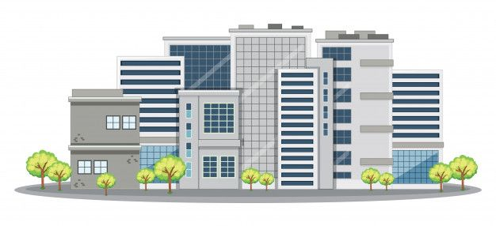

School
Computers are versatile electronic devices that have revolutionized nearly every aspect of modern life. They process and store information using binary code, allowing them to perform an array of tasks, from complex calculations and data analysis to multimedia entertainment and communication. Computers come in various forms, including desktops, laptops, tablets, and smartphones, each tailored to specific user needs. Their rapid evolution, driven by Moore's Law and advancements in semiconductor technology, has continuously expanded their capabilities,
Student
Computers are versatile electronic devices that have revolutionized nearly every aspect of modern life. They process and store information using binary code, allowing them to perform an array of tasks, from complex calculations and data analysis to multimedia entertainment and communication. Computers come in various forms, including desktops, laptops, tablets, and smartphones, each tailored to specific user needs. Their rapid evolution, driven by Moore's Law and advancements in semiconductor technology, has continuously expanded their capabilities,

Education Office
Computers are versatile electronic devices that have revolutionized nearly every aspect of modern life. They process and store information using binary code, allowing them to perform an array of tasks, from complex calculations and data analysis to multimedia entertainment and communication. Computers come in various forms, including desktops, laptops, tablets, and smartphones, each tailored to specific user needs. Their rapid evolution, driven by Moore's Law and advancements in semiconductor technology, has continuously expanded their capabilities,
Computers are versatile electronic devices that have revolutionized nearly every aspect of modern life..Computers are versatile electronic devices that have revolutionized nearly every aspect of modern life. They process and store information using binary code, allowing them to perform an array of tasks, from complex calculations and data analysis to multimedia entertainment and communication. Computers come in various forms, including desktops, laptops, tablets, and smartphones, each tailored to specific user needs. Their rapid evolution, driven by Moore's Law and advancements in semiconductor technology, has continuously expanded their capabilities,. Computers are versatile electronic devices that have revolutionized nearly every aspect of modern life..Computers are versatile electronic devices that have revolutionized nearly every aspect of modern life. They process and store information using binary code, allowing them to perform an array of tasks, from complex calculations and data analysis to multimedia entertainment and communication. Computers come in various forms, including desktops, laptops, tablets, and smartphones, each tailored to specific user needs. Their rapid evolution, driven by Moore's Law and advancements in semiconductor technology, has continuously expanded their capabilities,. Computers are versatile electronic devices that have revolutionized nearly every aspect of modern life..Computers are versatile electronic devices that have revolutionized nearly every aspect of modern life. They process and store information using binary code, allowing them to perform an array of tasks, from complex calculations and data analysis to multimedia entertainment and communication. Computers come in various forms, including desktops, laptops, tablets, and smartphones, each tailored to specific user needs. Their rapid evolution, driven by Moore's Law and advancements in semiconductor technology, has continuously expanded their capabilities,. Computers are versatile electronic devices that have revolutionized nearly every aspect of modern life..Computers are versatile electronic devices that have revolutionized nearly every aspect of modern life. They process and store information using binary code, allowing them to perform an array of tasks, from complex calculations and data analysis to multimedia entertainment and communication. Computers come in various forms, including desktops, laptops, tablets, and smartphones, each tailored to specific user needs. Their rapid evolution, driven by Moore's Law and advancements in semiconductor technology, has continuously expanded their capabilities,.
Computers are versatile electronic devices that have revolutionized nearly every aspect of modern life..Computers are versatile electronic devices that have revolutionized nearly every aspect of modern life. They process and store information using binary code, allowing them to perform an array of tasks, from complex calculations and data analysis to multimedia entertainment and communication. Computers come in various forms, including desktops, laptops, tablets, and smartphones, each tailored to specific user needs. Their rapid evolution, driven by Moore's Law and advancements in semiconductor technology, has continuously expanded their capabilities,. Computers are versatile electronic devices that have revolutionized nearly every aspect of modern life..Computers are versatile electronic devices that have revolutionized nearly every aspect of modern life. They process and store information using binary code, allowing them to perform an array of tasks, from complex calculations and data analysis to multimedia entertainment and communication. Computers come in various forms, including desktops, laptops, tablets, and smartphones, each tailored to specific user needs. Their rapid evolution, driven by Moore's Law and advancements in semiconductor technology, has continuously expanded their capabilities,. Computers are versatile electronic devices that have revolutionized nearly every aspect of modern life..Computers are versatile electronic devices that have revolutionized nearly every aspect of modern life. They process and store information using binary code, allowing them to perform an array of tasks, from complex calculations and data analysis to multimedia entertainment and communication. Computers come in various forms, including desktops, laptops, tablets, and smartphones, each tailored to specific user needs. Their rapid evolution, driven by Moore's Law and advancements in semiconductor technology, has continuously expanded their capabilities,.

Computers are versatile electronic devices that have revolutionized nearly every aspect of modern life..Computers are versatile electronic devices that have revolutionized nearly every aspect of modern life. They process and store information using binary code, allowing them to perform an array of tasks, from complex calculations and data analysis to multimedia entertainment and communication. Computers come in various forms, including desktops, laptops, tablets, and smartphones, each tailored to specific user needs. Their rapid evolution, driven by Moore's Law and advancements in semiconductor technology, has continuously expanded their capabilities,. Computers are versatile electronic devices that have revolutionized nearly every aspect of modern life..Computers are versatile electronic devices that have revolutionized nearly every aspect of modern life. They process and store information using binary code, allowing them to perform an array of tasks, from complex calculations and data analysis to multimedia entertainment and communication. Computers come in various forms, including desktops, laptops, tablets, and smartphones, each tailored to specific user needs. Their rapid evolution, driven by Moore's Law and advancements in semiconductor technology, has continuously expanded their capabilities,. Computers are versatile electronic devices that have revolutionized nearly every aspect of modern life..Computers are versatile electronic devices that have revolutionized nearly every aspect of modern life. They process and store information using binary code, allowing them to perform an array of tasks, from complex calculations and data analysis to multimedia entertainment and communication. Computers come in various forms, including desktops, laptops, tablets, and smartphones, each tailored to specific user needs. Their rapid evolution, driven by Moore's Law and advancements in semiconductor technology, has continuously expanded their capabilities,.